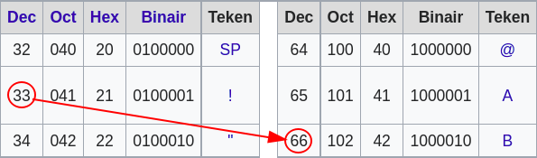
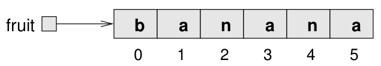

Lussen en strings
Inhoud
Lussen en strings¶
Handelingen herhalen en tekstuele data
Oneindige lussen¶
while lussen
while (true) {
System.out.println("Help");
}
De conditie is in dit geval altijd waar en de boodschap zal eindeloos worden herhaald, een oneindige lus!
int n = 3;
while (n > 0) {
System.out.println(n);
n = n - 1;
}
System.out.println("Blastoff");
3
2
1
Blastoff
Zolang de conditie n > 0 waar is zal de body van de lus worden uitgevoerd.
Wanneer stopt een lus?¶
while (n != 1) {
System.out.println(n);
if (n % 2 == 0) { // n is even
n = n / 2;
} else { // n is odd
n = 3 * n + 1;
}
}
Soms is het moeilijk te bepalen of een lus stopt. Deze lus gaat door tot n 1 is (wat de conditie false maakt).
Elke keer dat de lus wordt doorlopen, toont het programma de waarde van n en controleert vervolgens of deze even of oneven is. Als het even is, wordt de waarde van n door 2 gedeeld. Is het oneven, dan wordt de waarde vervangen door \(3n+1\). Bijvoorbeeld, als de beginwaarde 3 is, dan is de resulterende reeks 3, 10, 5, 16, 8, 4, 2, 1.
Aangezien n soms toeneemt en soms afneemt, is er geen voor de hand liggend bewijs dat n ooit 1 zal bereiken en dat het programma ooit zal eindigen. Voor sommige waarden van n, zoals machten van twee, kunnen we bewijzen dat het programma eindigt.
De moeilijke vraag is dus of dit programma eindigt voor {alle} waarden van n. Tot nu toe is niemand er in geslaagd om dit te bewijzen of te weerleggen! Zie voor meer informatie
Voor meer informatie over dit probleem het vermoeden van Collatz.
Het vakgebied informatica is geïnteresseerd in dit soort vragen, omdat de antwoorden daarop inzicht geven in de grenzen van wat computers wel en niet kunnen.
Verhogen en verlagen¶
Of incrementeren en decrementeren
int i = 1;
while (i <= 5) {
System.out.println(i);
i++; // add 1 to i
}
1
2
3
4
5
Aan het einde van elke iteratie wordt de teller i met 1 verhoogd tot de conditie i < 5 waar is. Je ziet hier i++ gebruikt worden om i met 1 te incrementeren. Dit is niet de enige mogelijke syntax voor deze operatie.
Syntax¶
Incrementeren
n = n + 1n += 1n++
Decrementeren
n = n - 1n -= 1n--
Drie varianten zijn dus mogelijk om dezelde handeling uit te drukken. Misschien zelfs een vierde want ++n (of --n) is ook mogelijk!
Een subtiel verschil¶
n++ versus ++n
int i = 3;
int a = i++; // a = 3, i = 4
int b = ++a; // b = 4, a = 4
a
4
b
4
Zowel de waarden van i als a worden geïncrementeerd, het verschil tussen beide is wannéér dit gebeurt, voor of ná de expressie.
++i verhoogt het getal voordat de huidige uitdrukking wordt geëvalueerd, terwijl i++ het getal verhoogt nadat de uitdrukking is geëvalueerd.
int a = 2
++a
3
Incrementeer voor de expressie, de waarde 3 wordt teruggegeven.
a
3
Als we a opvragen dan is de waarde inderdaad 3.
int b = 2;
b++
2
Incrementeer na de expressie, de waarde 2 wordt teruggegeven (de beginwaarde).
b
3
Als b vervolgens wordt opgevraagd is het inderdaad geïncrementeerd!
Eindige lussen¶
for lussen
int n = 3;
while (n > 0) {
System.out.println(n);
n = n - 1;
}
System.out.println("Blastoff");
Denk terug aan de while lus waar we mee zijn begonnen, dit kan worden herschreven naar een for lus.
for (int n = 3; n > 0; n = n - 1) {
System.out.println(n);
}
System.out.println("Blastoff");
3
2
1
Blastoff
for (int n = 3; n > 0; n = n - 1) {
// ...
}
( initialisatie ; conditie ; incrementatie of decrementatie )
initialisatie
Hier wordt een variabele geinitialisereerd, dit wordt eenmalig uitgevoerd wanneer de lus start.
conditie
Deze conditie wordt elke keer getest en de lus wordt uitgevoerd zolang deze conditie waar is (
true).Incrementeren of decrementeren
Het verhogen of verlagen van de variabele waarde. Dit wordt uitgevoerd bij elke volgende herhaling.
Eindig en oneindig¶
Waarom wordt een while een oneindige lus genoemd? Je gebruikt deze lus wanneer je niet zeker weet hoeveel keer de lus moet worden doorlopen. Bijvoorbeeld als je een gebruiker vraagt naar een wachtwoord, dan weet je niet van tevoren hoe vaak je de vraag moet herhalen omdat de gebruiker daar meerdere keren over kan doen (wachtwoord vergeten, verkeerd getypt, etc.).
Een for lus gebruik je eerder als je wél weet hoe vaak het zal moeten doorlopen, bijvoorbeeld voor het doorlopen van een array van waarden of een string.
Maar bedenk, elke while lus kan herschreven worden naar een for lus en vice versa.
Geneste lussen¶

Voordat de klok een uur kan verspringen zullen eerst alle minuten worden doorlopen…
public class Time {
public static void main(String[] args) {
for (int hour = 0; hour < 24; hour++) {
for (int minute = 0; minute < 60; minute++) {
System.out.printf("De tijd is %02d:%02d\n", hour, minute);
}
}
}
}
De tijd is 00:00
De tijd is 00:01
...
De tijd is 23:58
De tijd is 23:59
De buitenste lus doorloopt de uren, de binnenste lus de minuten. De buitenste lus zal pas een volgende iteratie starten als de binnenste lus in beëindigd.
Karakters¶
Een char representeert een enkel karakter.
char c = '!';
Let op de enkele aanhalingstekens! Maakt twee karakters een string?
c + c;
66
Zou een optelling een string opleveren? Nee, het levert een numerieke waarde op!
(char) 66
B
Maar een int kan je casten naar een char en in dit geval komt 66 overeen met B. Hoe werkt dit?
Unicode¶
Unicode is een superset van [ASCII](https://nl.wikipedia.org/wiki/ASCII_(tekenset)

Een char staat voor een code point, een numerieke waarde die voor een karakter staat. De numerieke waarde van “!” is 33, als je dit verdubbelt dan komt je uit op 66, wat staat voor het karakter “B”.
char en String¶
char a = 'a';
String b = "ha";
char c = '!';
a + b + c
aha!
Een karakter toevoegen aan een String is dus heel goed mogelijk!
Strings¶
Een verzameling van char’s?
De lengte van een String¶
String fruit = "banana";
fruit.length()
6
Een string doorlopen¶
String reversed = "";
for (int i = 0; i < fruit.length(); i++) {
reversed = fruit.charAt(i) + reversed;
}
reversed
ananab
Substrings¶
Een deel van een String

fruit.substring(0, 3);
ban
fruit.substring(2, 5);
nan
fruit.substring(6, 6);
De eerste parameter is de start index, deze is inclusief. De stop index is exclusief (tot, en niet tot en met).
Als je meer vraagt dan de string lang is zal je een lege string als returnwaarde krijgen.
fruit.substring(0);
banana
fruit.substring(2);
nana
fruit.substring(6);
Een stopwaarde is niet noodzakelijk, als je substring een enkele parameter aanroept dan zal de returnwaarde een substring zijn vanaf deze index.
Strings vergelijken¶
Over waarde en identiteit
String a = "Hallo wereld!";
String b = "Dag allemaal!";
a == b
false
== betekent een vergelijking van identiteit, of met andere woorden, hebben deze objecten hetzelfde adres in het geheugen?
a.equals(b)
false
De methode equals gebruik je voor een vergelijking van waarden, ongeacht de lokatie in het geheugen.
Bijzonder gedrag¶
String a = "Hallo wereld!";
String b = "Hallo wereld!";
a == b
true
a.equals(b)
true
Nu lijken het wel dezelfde objecten wat betreft zowel identiteit als waarde?!? Er is iets bijzonders aan de hand met strings, lees om deze reden String Mystery door voor de achtergrond van dit gedrag, het heeft alles te maken hoe strings worden aangemaakt en optimalisaties die de JVM toepast.
De boodschap¶
Gebruik altijd equals als je wilt vergelijken op waarde!